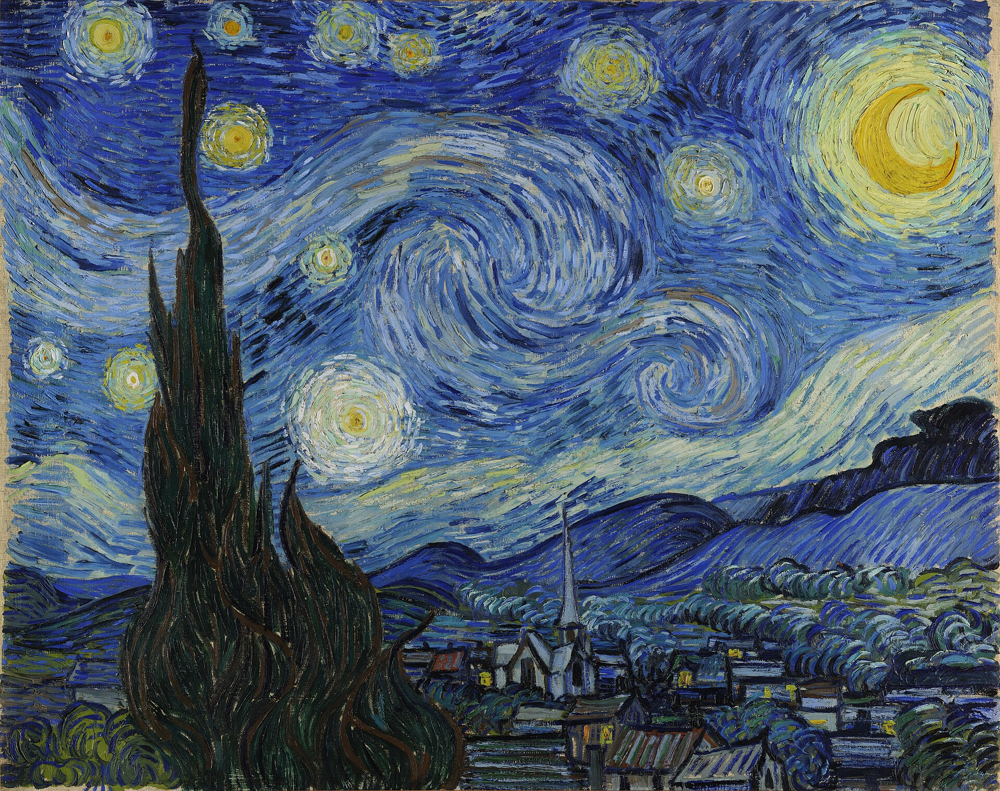
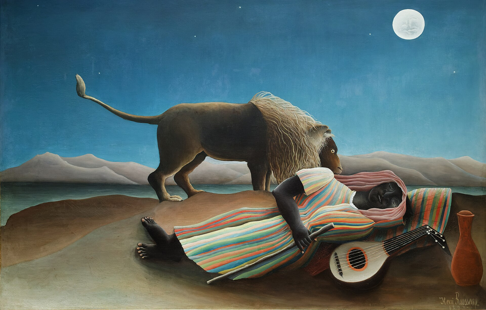
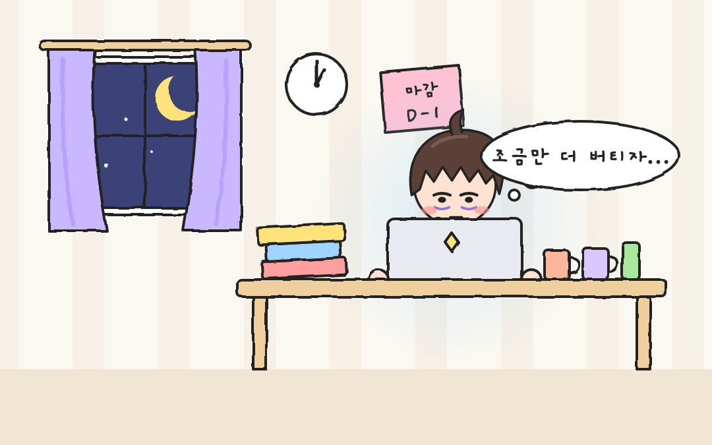
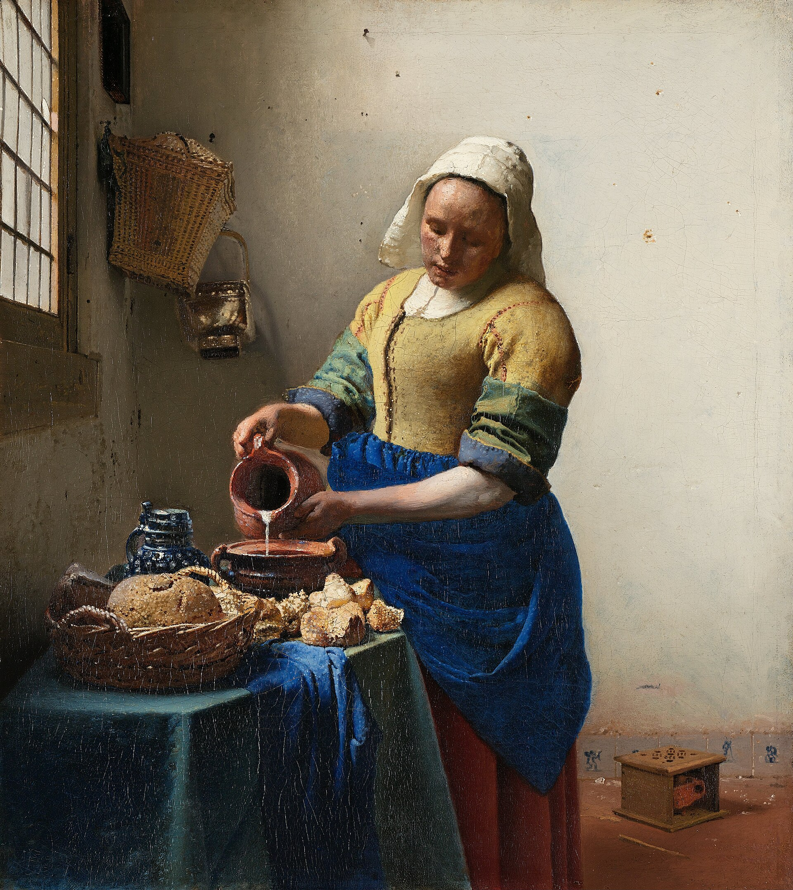
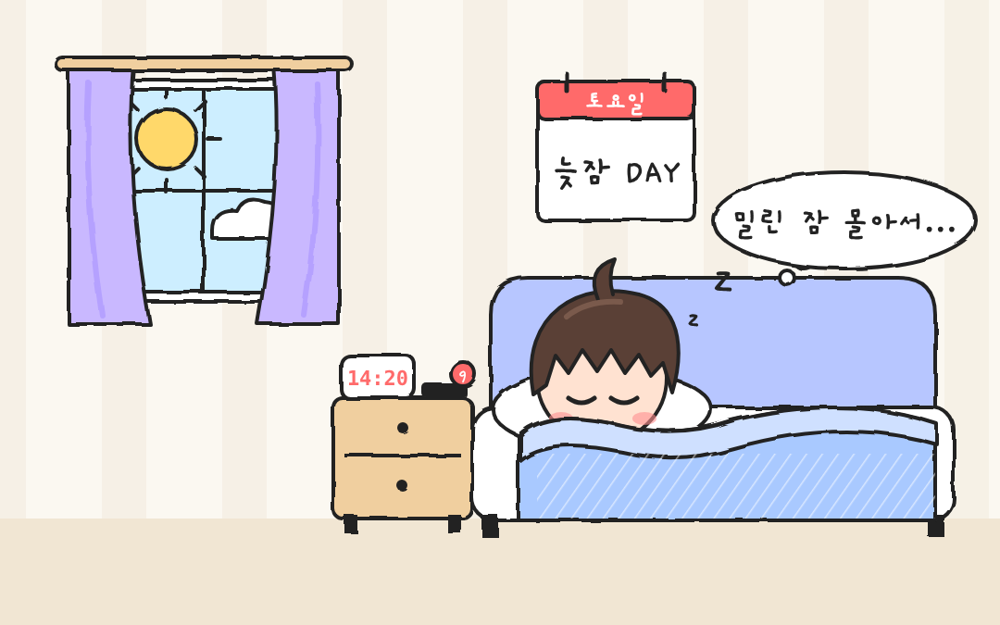
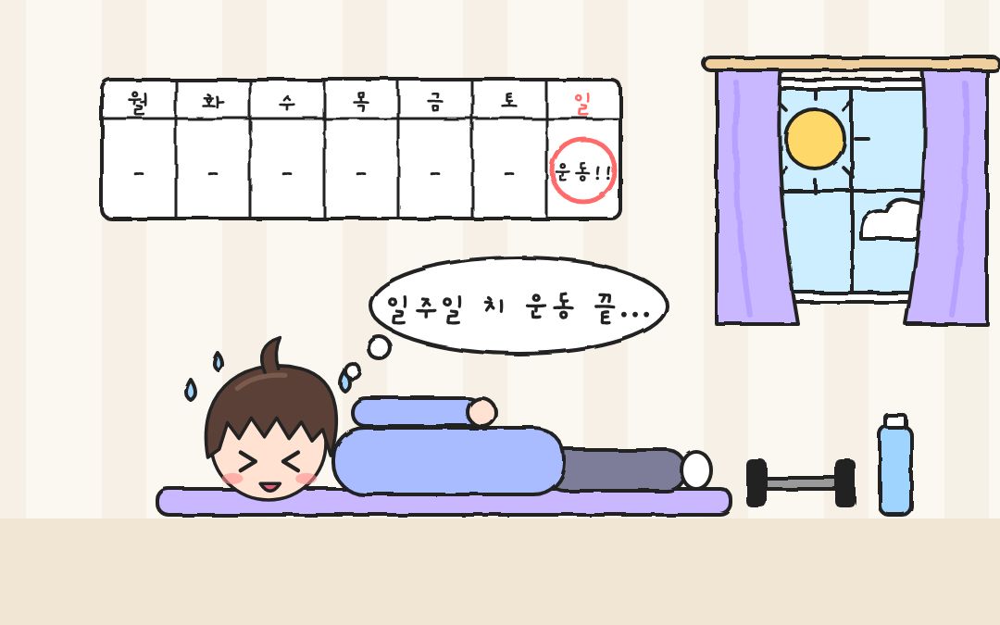

화면 · 공부 시간대 · 취침 알람미국 대학생 1,100여 명 수면 보상 실험Journal of Political Economy (2026)
잠드는 시간의 규칙성60세 이상 3,973명 12년 추적 관찰 연구JAMA Network Open (2026.11)
매일 10분의 운동웨어러블 데이터 분석, 미국 UT 오스틴 (2026.10)
※ 대부분 관찰 연구라 '원인'까진 아니고 '연관'이야.대상이랑 조건이 달라서 사람마다 다를 수 있어.